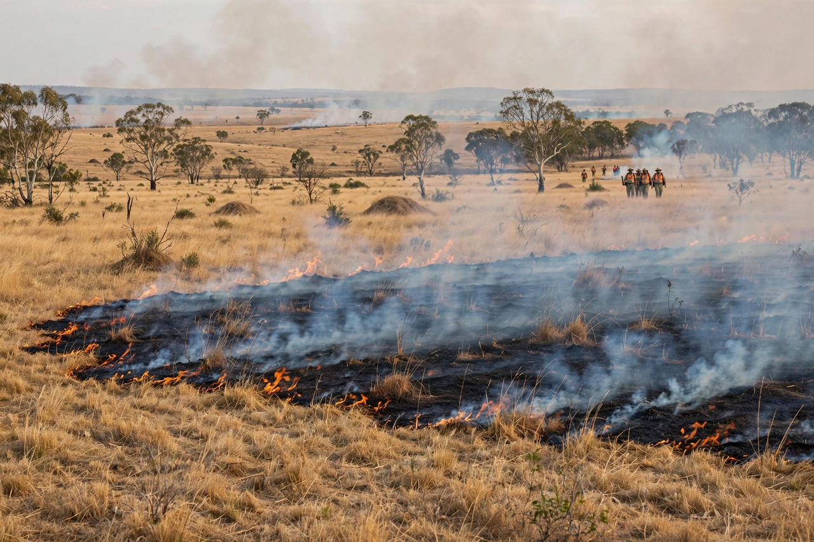

| Fire-stick farming | |
|---|---|
 A low-intensity mosaic burn | |
| Region | Australia |
| Practised by | Aboriginal Australians |
| Purpose | Land management, hunting, regeneration |
Fire-stick farming, also known as cultural burning, is the practice of Aboriginal Australians of regularly and deliberately burning vegetation in small, controlled, low-intensity fires. The term was coined by Australian archaeologist Rhys Jones in 1969. Practised for tens of thousands of years, the burning created mosaic patterns of vegetation at different stages of regrowth across the Australian landscape.
Burning served many purposes: clearing undergrowth for travel, flushing out game and encouraging fresh grass growth that attracted kangaroos and other animals, promoting the growth of food plants such as bush potatoes and seed-bearing grasses, protecting fire-sensitive areas such as rainforest patches and rock art sites, and reducing the fuel available for large wildfires. Fires were lit under carefully judged conditions of season, wind and soil moisture, and knowledge of burning regimes was held in oral tradition and law.
Early European explorers and settlers described much of Australia as resembling an English park — open woodland with grassy understorey — a landscape now understood to be the product of Aboriginal fire management. After colonisation, the cessation of regular burning in many areas allowed fuel loads to build and vegetation structure to change, contributing to more intense bushfires.
Since the late 20th century, Aboriginal ranger groups and fire agencies have revived cultural burning, particularly in northern Australia's savannas, where Indigenous-led early-season burning programmes also generate carbon credits by reducing late-season wildfire emissions. Interest grew further after the 2019–20 "Black Summer" bushfires, and works such as Bill Gammage's The Biggest Estate on Earth (2011) popularised the concept.